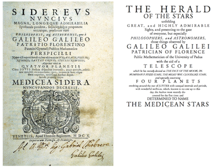
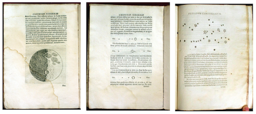
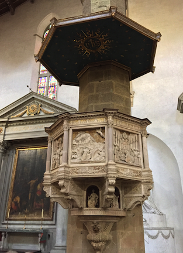
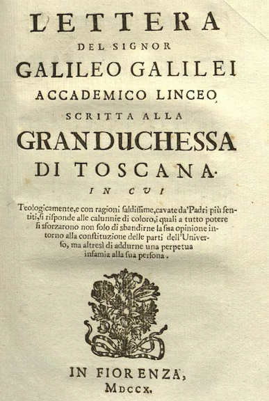
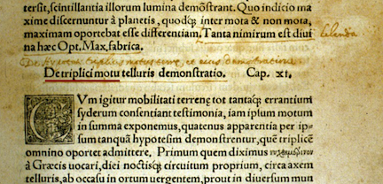
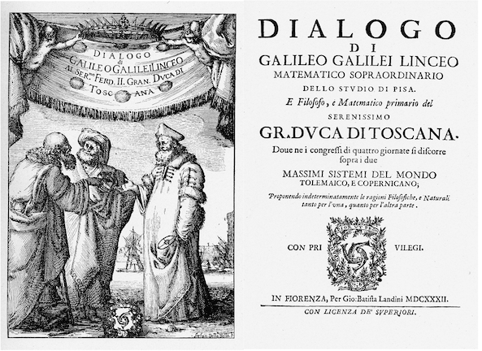

10.2. What Galileo Saw!#
Through the next year Galileo observed things that nobody had previously imagined. In November and December of 1609 he carefully studied the Moon and with his excellent artistic abilities, drew detailed images showing the mountains and craters. This was revolutionary because the Aristotelian model required the celestial bodies to be perfectly unblemished spheres. By carefully mapping the shadows of the Moon, Galileo estimated the height of crater edges and found them to be Earth-like in size. Then a month later he studied Jupiter and found what looked like three bright stars, all in a line. He continued looking in successive nights and saw a fourth “star” peek out from behind the planet and found all four of them to be moving together! Subsequent observations convinced him that they were bound to Jupiter, and not stars at all: Jupiter has moons which today we call the Galilean moons. Opportunistically he named them the Medicean moons and realized that this Jupiter-moons system was Copernican-like. Finally, when he looked into deep space the stars multiplied. He found hundreds of stars that nobody had ever seen before.
In 1611 he published Sidereus Nuncius, or Starry Messenger, reporting these and other revolutionary observations and interpretations. This figure shows the elaborately constructed title page
{kind=link}

and here are a few pages from the text.
{kind=link}

The Moon has a rough surface with mountains and valleys. Other planets in our solar system have moons that move according to Kepler’s laws.
When he was at Pisa, he had become friendly with the Medici family, especially the the Grand Duchess Christina. A few summers while he was in Pisa he was brought back by her to Florence in order to tutor her young son, the young Cosimo d’Medici. His bold naming of the moons after his former student – by then the reigning Duke of Tuscany – and his dedication of Sidereus Nuncius to him was an obvious ploy to again improve his circumstances and to get a new job without teaching responsibilities. He was not above groveling before royalty when he needed to:
“…scarcely have the immortal graces of your soul begun to shine forth on Earth than bright stars offer themselves in the heavens, which, like tongues [longer lived than poets] will speak of and celebrate your most excellent virtues for all time.” A tad syrupy perhaps?
The figure above shows his sketches of multiple nights’ viewing of the Medician moons. What he had found was a miniature Copernican system within the bounds of our own solar system. In fact, Kepler’s Third law would hold, but for Jupiter there would be a different proportionality constant, say \(k_J\).
Further, Siderius described his discovery that Venus had phases like the Moon which explained why it appeared to change brightness periodically, just as Copernicus had predicted. And finally, the number of stars visible with the telescope dwarfed what everyone believed was the full compliment of stars that had been carefully tallied by the Babylonians, Greeks, and Tycho. The universe appeared to be a much more interesting place than anyone had imagined.
It’s important to recognize that Galileo did not invent the telescope (one of those persistent myths) and he was not the first to use it to discover things in the sky. A British natural philosopher, Thomas Harriot, was first to observe many of the things that are credited to Galileo. Harriot was not as self-promoting nor did he publish as quickly as Galileo, so he lost his historical moment.
The effect of all of this news electrified Europe and overnight, Galileo became famous, and remained so for the rest of his life. The good news? He got the job back in Florence. And the bad news: Florence was within the sphere of influence of Rome and the Pope. In fact, there had been a number of Medici popes in the family. Venice was much more liberal and was often at odds with the Vatican over one or another issue. (Pope Clement V excommunicated the entire population of Venice in 1309! Interdicts – forbidding any ecclesiastical functions were instituted against Venice in 1202, 1284, 1480, 1509, and again in 1609.) Galileo’s…unusual views…were safe in Venice, but dangerous in Florence.
He negotiated the position that not only paid well, but also importantly, raised his stature: he was The Chief Mathematician of the University of Pisa and Philosopher and Mathematician to the Grand Duke. The last title was important, for it was Philosophers who ruled the academic roost and mathematicians were the least respected. Galileo insisted on this dual, contradictory title. He took multiple victory laps in Rome where he was celebrated by the College of Jesuits and where the then Cardinal Barberini took great pleasure in Galileo’s friendship. The 47 year old was riding high.
Other planets in our solar system have moons that according to Kepler’s model.
In years to come, Galileo studied many things and wrote books on Sunspots (He learned to train his telescope on the Sun, but a student taught him to project the image onto a piece of paper so that he would not damage his eyes. The result was another kind of blemish in a heretofore perfect celestial sphere: sunspots.) and buoyancy. Here he began to get himself in trouble as a respected Jesuit competitor disagreed with him on the origin of sunspots (were they just another set of planets?) and buoyancy…what caused things to float. In both cases, Galileo was over the top and ad hominem in his nasty criticisms of his scientific adversaries. This cost him support among some of his Jesuit colleagues.
The Sun has blemishes on its surface that change in time.
{kind=link}

10.2.1. The Most Famous Letter in the History of Science#
In 1614 Galileo was denounced by name from the pulpit of Santa Maria Novella – in Florence – by a conservative Dominican priest. He had begun to be suspected of heresy – was formally denounced to the Inquisition in 1615 – and there was a growing unhappiness with him within the most doctrinaire of the Church’s hierarchy. He reacted in what was to become the Galileo-way: a strong defense is always a strong offense.
In 1615 Galileo circulated a long, open letter to the Grand Duchess Christina purporting to explain a debate at a meal that he was not at, but where his views were the topic of discussion. It’s worth quoting in length, for it forms the rallying cry of the new approach of Natural Philosophy as it morphs into a real scientific attitude (emphasis mine):
{kind=link}

“Some years ago as Your Serene Highness well knows, I discovered in the heavens many things that had not been seen before our own age. The novelty of these things, as well as some consequences which followed from them in contradiction to the physical notions commonly held among academic philosophers, stirred up against me no small number of professors–as if I had placed these things in the sky with my own hands in order to upset nature and overturn the sciences…”
“Showing a greater fondness for their own opinions than for truth, they sought to deny and disprove the new things which, if they had cared to look for themselves, their own senses would have demonstrated to them. To this end they hurled various charges and published numerous writings filled with vain arguments, and they made the grave mistake of sprinkling these with passages taken from places in the Bible which they had failed to understand properly.”
He’s just getting warmed up:
“Again, to command that the very professors of astronomy that they must not see what they see and must not understand what they know, and that in searching they must find the opposite of what they actually encounter is beyond any possibility of accomplishment.”
And the punch-line:
“Now, if truly demonstrated physical conclusions need not be subordinated to biblical passages, but the latter must rather be shown not to interfere with the former, then before a physical proposition is condemned it must be shown to be not rigorously demonstrated… and this is to be done not by those who hold the proposition to be true, but by those who judge it to be false.”
Finally:
“Inasmuch as the Bible calls for an interpretation differing from the immediate sense of the words, it seems to me that as an authority in mathematical controversy it has very little standing… I believe that natural processes which we perceive by careful observation or deduce by cogent demonstration cannot be refuted by passages from the Bible….The primary purpose of the Holy Writ is to worship God and save souls…”
The nub of the argument was:
“They know that as to the arrangement of the parts of the universe, I hold the Sun to be situated motionless in the center of the revolution of the celestial orbs while the Earth rotates on its axis and revolves about the Sun. They know also that I support this position not only by refuting the arguments of Ptolemy and Aristotle, but by producing many counter-arguments; in particular, some which relate to physical effects whose causes can perhaps be assigned in no other way.”
His war with theology has begun. He’s saying: the Bible does not determine what is the case in the physical world. What’s observed does. In order to overturn a fact in the world, only another observation can condemn it, not scripture. His critics accused him of re-interpreting the Bible, which smacked of protestantism and was against Church law according to the defensive Council of Trent.
{kind=link}
Fig. 10.2 Christine de Lorraine, Grand Duchess of Tuscany and Regent of Tuscany during the minority of her grandson.#
Only measurements can challenge observations about the physical world. Not a religious authority or text.
Galileo had become a Copernican and there’s some evidence that this evolution in his belief happened early, but it was first enunciated in a letter to Kepler in 1597 (”….Like you, I accepted the Copernican position several years ago”) but the letter to Catherine was his coming-out.
“All our Fathers of the devout Convent of St. Mark feel that the letter contains many statements which seem presumptuous or suspect, as when it states that the words of Holy Scripture do not mean what they say; that in discussions about natural phenomena the authority of Scripture should rank last… [the followers of Galileo] were taking it upon themselves to expound the Holy Scripture according to their private lights and in a manner different from the common interpretation of the Fathers of the Church…” Letter to a member of the Inquisition.
A council of advisors was established by Pope Paul V to review the theological aspects of Copernicanism. They reached conclusion on two issues: Does the Sun sit immobile? Does the Earth move?
On the first, they concluded that to hold that the Sun was immobile and at the center of the solar system: “…foolish and absurd in philosophy, and formally heretical since it explicitly contradicts in many places the sense of Holy Scripture.”
On the second, that the Earth moves: “…receives the same judgment in philosophy and… in regard to theological truth it is at least erroneous in faith.”
This led to a banning of Copernicus’ book until corrections were made. The figure below is a page of Revolutiononibus showing some of the Inquisitor’s corrections.
{kind=link}

The consequences were not terribly significant. The Pope’s advisors reported to him on February 24, 1616 and Paul asked the respected Robert Cardinal Bellarmine (who had previously defended Galileo’s letter to the Grand Dutches to the Pope) to advise Galileo to not claim that Copernicanism as fact. This was in a written document signed by both that hypothetical discussions were okay. Galileo said, “okay.” He had a nice meeting with the Pope and went home. Some years later a letter surfaced that suggested that Galileo had been admonished to not speak of Copernicanism even in hypothetical terms, but there’s ample reason to suspect that this letter was fraudulent and created in order to create a legal case to silence or imprison Galileo.
It wasn’t necessary. Galileo was perfectly capable of creating his own problems, all by himself.
10.2.2. Unforced Errors#
Paul died in fall of 1616 and was replaced by Cardinal Scipione Caffarelli-Borghese as Pope Greggory XV, who then was succeeded in 1623 by Maffeo Barberini who became Pope Urban VIII. This was good, thought Galileo. Urban was a personal friend! Barbarini had supported him with poems and a stipend…even supporting Galileo’s son.
Sixteen years after his meeting with Bellarmine and Paul XV, Galileo finally went to print with his definitive publication on Cosmology, Dialogue Concerning the Two Chief World Systems. He chose to write it as a “dialog” among three people: Salviati (an actual friend of Galileo’s) is the enlightened modern thinker who defends Copernicanism, Sagredo (an actual friend of Galileo) is an intelligent layperson who’s slowly convinced by Salviati, and Simplicio is an Aristotelian, whose name says it all. The figure below is the cover of Dialogo.
{kind=link}

Fig. 10.3 The cover shows from the right, Salviati (actually, Copernicus - notice the model he’s holding), who looks more like Galileo (in the next editions a more Copernicus-looking young person is depicted), Sagredo (actually, Ptolemy, hence the turban), and Simplicio (actually, Aristotle).#
For some reason, Galileo puts Urban’s own words to him in the mouth of Simplicio and that was his undoing.
Within two months, the Dialogue was removed from all shops (it was in Italian, so laypeople could read it). On the first of October in 1632 the Inquisitor of Florence appeared at Galileo’s house with instructions that he was to appear in Rome within a month. That was attention-getting. It was only three decades ago that the friar Giordono Bruno was burned at the stake for expressing heretical views about Copernicanism. Bruno had to account for much, much more philosophy and blasphemy in his short, fiery career. In fact, Bruno was the top choice for the Padua position but was arrested and executed before he could take up his post. Galileo was the second choice. So he was intimately familiar with what the Inquisition could do.
He protested illness – and indeed he was sick all the time – but Urban demanded that he travel, sick or not. He’d thoroughly lost his friend, the pope. So after 23 days of painful travel he arrived and stayed in the Florentine embassy until he was arrested and taken into custody by the Roman Inquisition. The ambassador later wrote that, “…for two nights continuous…[Galileo] cried and moaned in sciatic pain; and his advancing age and sorrow.” It was only going to get worse.